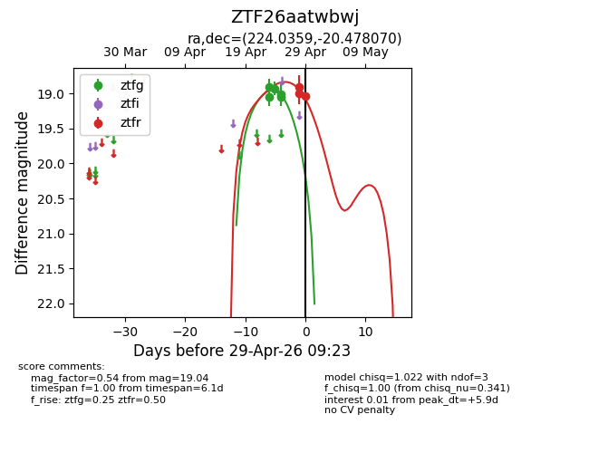
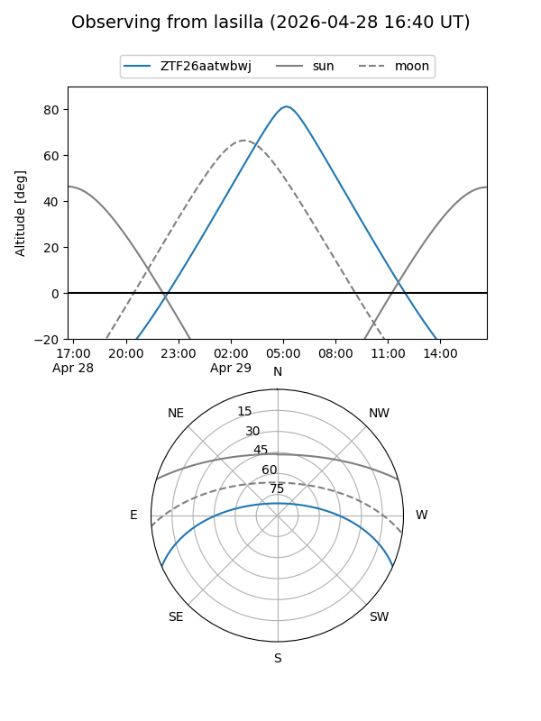
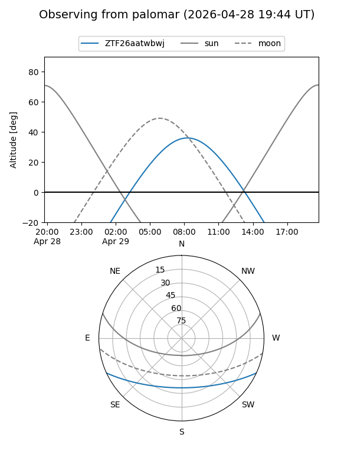
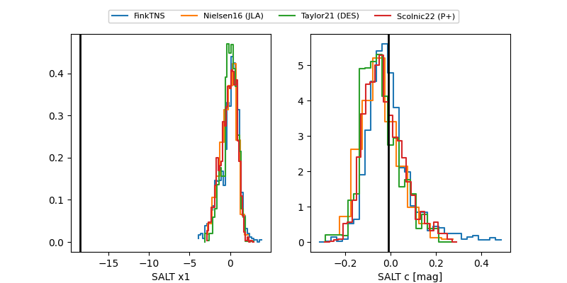

ZTF26aatwbwj
Target ZTF26aatwbwj at 2026-04-29 09:26
Aliases and brokers:
FINK: link
Lasair: link
ALeRCE: link
alt names
ZTF26aatwbwj (ztf,fink_ztf)
Coordinates:
equatorial (ra, dec) = 224.0359,-20.47807
equatorial (HMS+DMS) = 14:56:08.62,-20:28:41.05
galactic (l, b) = (338.5539,+33.62872)
Flags:
Photometry:
last ztfg=19.05, ztfr=19.04
5 ztfg, 3 ztfr detections
Lightcurve

Visibility


Additional plots
